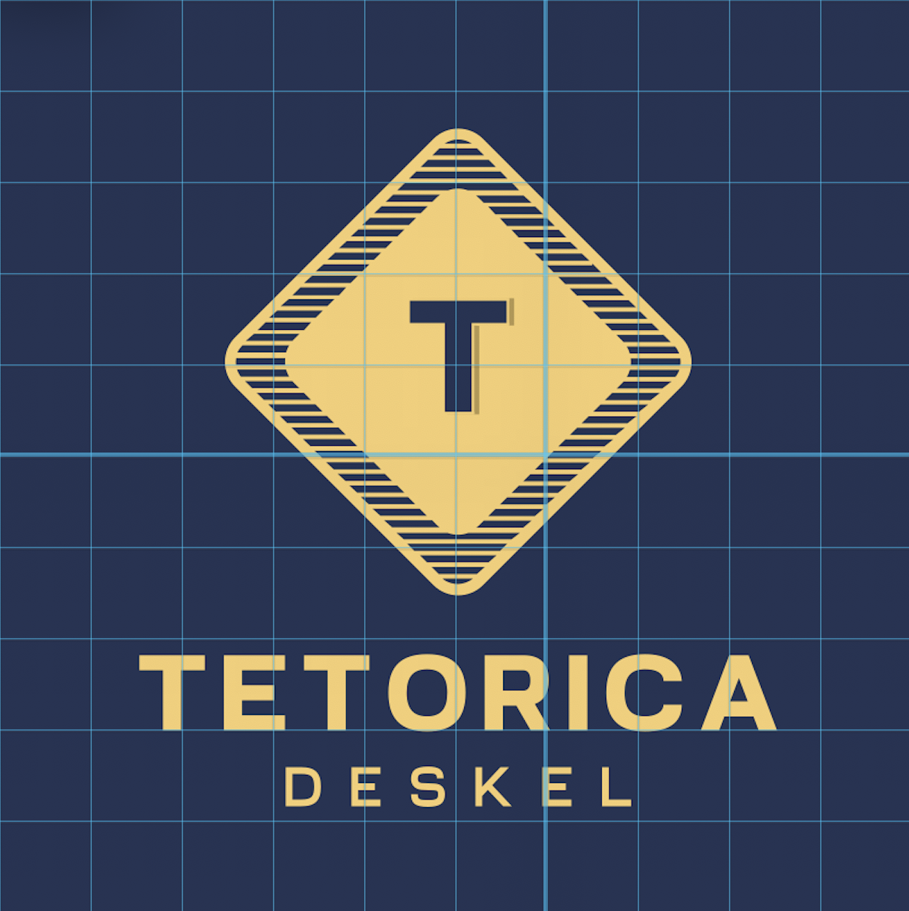
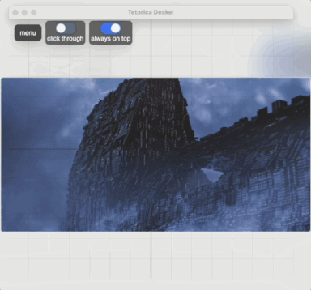
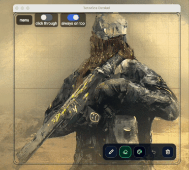
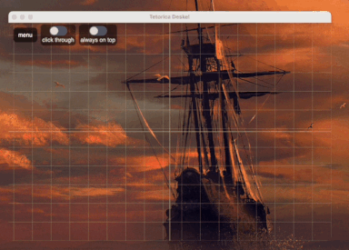
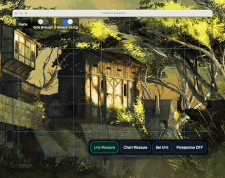
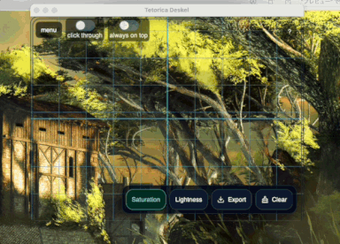
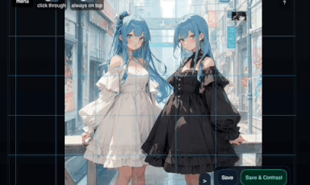
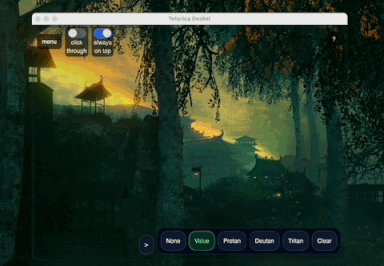
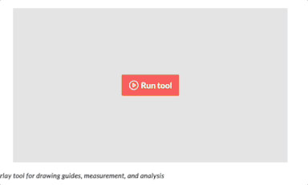
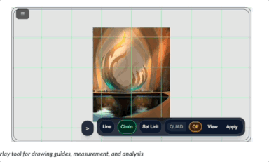

What is this?
tetorica deskel is a drawing overlay tool for PC and Web.
It runs on Windows and macOS. It works on top of other windows.
It offers a design scale, measuring lines, color analysis, drawing guides, and palette creation.
Japanese:
Tetorica Deskel は PC向けのデスケルアプリです。Windows と Mac と Web で動作します。他のウィンドウに重ねて利用できます。
デザインスケール、はかり棒、色相分析、補助線、パレット作成などの機能を備えています。
- Measure proportions
- Align drawings
- Trace references
- Check balance and composition
Features
- Transparent overlay window
- Grid (adjustable spacing)
- Center cross
- Custom color / opacity / line width
- Click-through mode (interact with apps behind)
- Always-on-top toggle (pin)
- Global shortcut support
- Rotate grid screen
- Screenshot with grid
- Multi monitor support
- Export Procreate format, PNG and CSV
- Contrast Analysis
Tested with OBS and Indirect Display Driver (IDD) Sample on GitHub. Also tested with MacBook Air and USB-C monitor.
TODO: Calibration Screen Capture
Measure stick

Color analysis
Simple draw

Chain measure stick

Perspective Ruler

Contrast analysis (1)

Contrast analysis (2)

Protan / Deutan / Tritan preview

WEB 01

WEB 02

Shortcuts
| Action | Shortcut |
|---|---|
| Toggle click-through | Cmd/Ctrl + Shift + J |
Use Cases
- Drawing practice (デッサン)
- Manga / illustration layout
- Proportion checking
- Tracing reference images
- UI / design alignment
Concept
Most existing tools:
- require importing images
- modify the original image
- are not designed for real-time drawing
tetorica deskel is different:
It does nothing but overlay guides on your screen.
No saving. No editing. No friction. Just open and draw.
Tech
- Tauri
- TypeScript
- Canvas API
Build
npm install
npm run tauri devnpm run tauri buildRoadmap
- Image overlay (reference mode)
- PWA
- iOS/Android App
- Vector Search
- Save Copy&Paste Color Palette
- Calibration for Screen Capture
- Contrast Analysis
- Support RYB base (now HSV)
License
MIT
References
Toggle button
tailwindflex.com/@anonymous/toggle-me-animated-switch
Generated icon
Demo Image
I used these artworks for the demo. Thank you.
Great artwork really enhances the visuals.
- walterlicinio.itch.io/artworks
- x.com/walterlicinio
- deviantart.com/al7al700/art/Japanese-Cc0-Girl-Anime-PNG-Free-Download-1144417787
- instagram.com/intpcommunity/